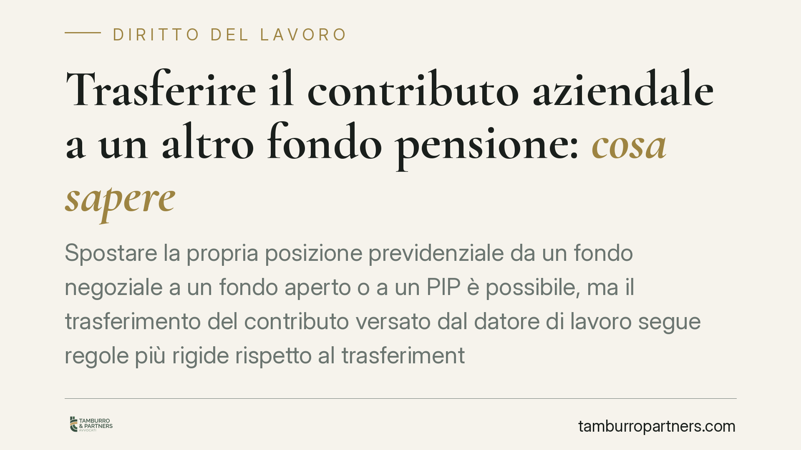
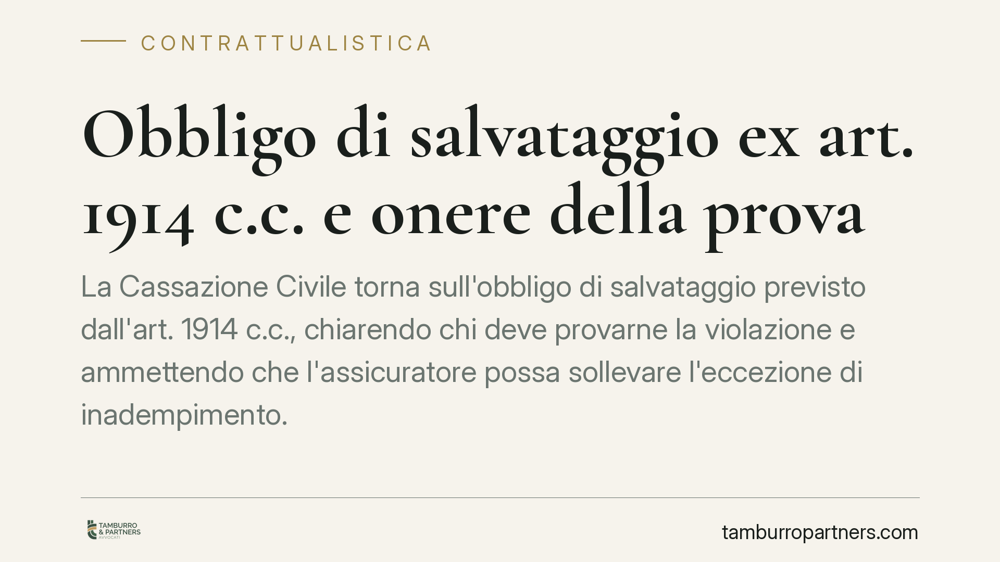
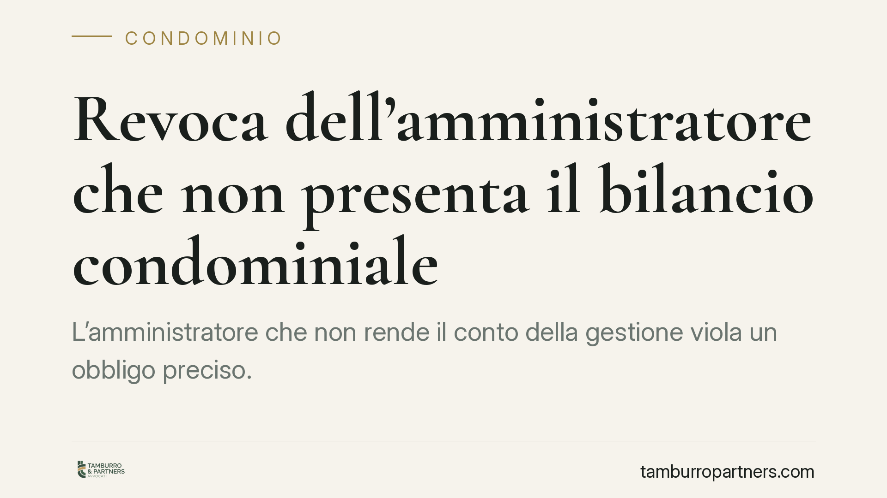
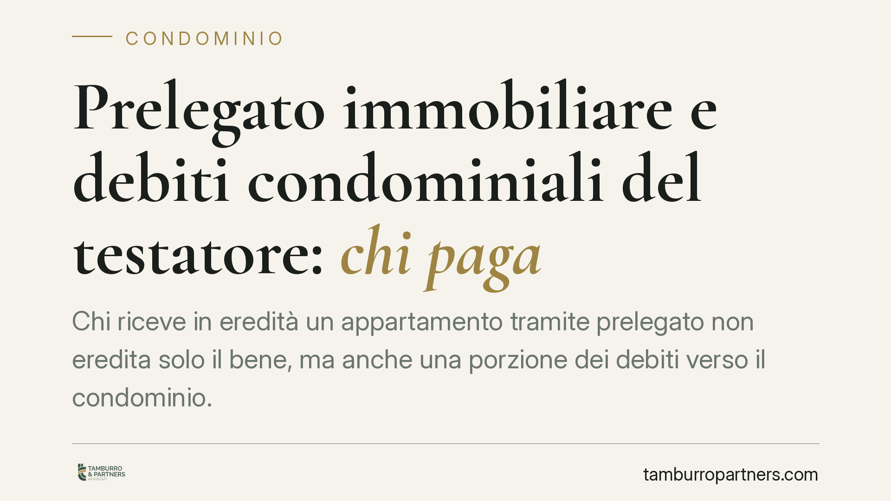
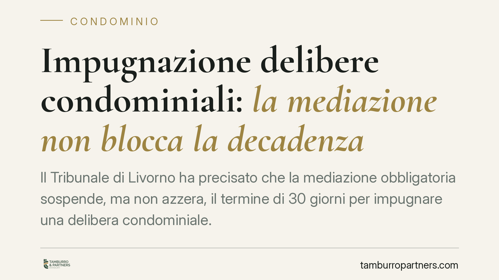
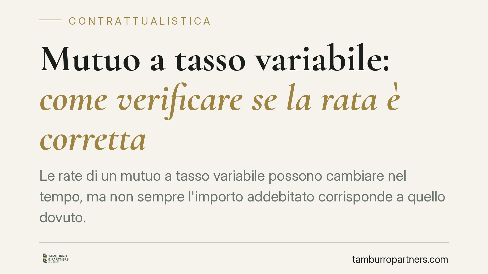

Salario giusto e contrasto al caporalato digitale: cosa monitorare
Il dibattito sul cosiddetto "salario giusto" e sul contrasto al caporalato digitale è tornato al centro delle iniziative legislative in materia di lavoro. Prima di adeguare contrat…
Infortunio sul lavoro: l'appaltatore risponde se fornisce attrezzature inadeguate
Chi fornisce le attrezzature, in cantiere come in azienda, può rispondere dell'infortunio anche in assenza di un rapporto di lavoro subordinato formale. Una recente linea della Cas…
Danni da inadempimento al passivo senza risoluzione del contratto
Una recente ordinanza della Corte di Cassazione torna su un punto controverso: il credito risarcitorio da inadempimento contrattuale può essere ammesso al passivo di una procedura …
Dividere un condominio in due edifici separati: quando è possibile
Un condominio può essere diviso in due edifici autonomi quando le parti hanno indipendenza strutturale. La legge lo consente con regole precise su maggioranze e parti comuni. Capir…

Trasferire il contributo aziendale a un altro fondo pensione: cosa sapere
Spostare la propria posizione previdenziale da un fondo negoziale a un fondo aperto o a un PIP è possibile, ma il trasferimento del contributo versato dal datore di lavoro segue re…

Assemblea di condominio senza segretario: la delibera è annullabile?
Capita che un'assemblea si tenga senza nominare un segretario verbalizzante. La questione non è formale: il verbale documenta la volontà assembleare e ne consente il controllo. La …

Obbligo di salvataggio assicurativo: chi prova l'inadempimento
Nei contratti assicurativi l'assicurato deve attivarsi per limitare il danno. Ma quando l'assicuratore contesta la violazione di questo dovere, su chi grava la prova? La giurisprud…

Revoca dell'amministratore che non presenta il bilancio condominiale
L'amministratore che non rende il conto della gestione viola un obbligo preciso. Il Codice civile fissa un termine di 180 giorni per il rendiconto e individua nella mancata present…
Fondi pensione e ritiro del capitale: cosa cambia con le ipotesi della Legge di Bilancio 2026
Si discute di nuove modalità per ritirare il capitale accumulato nei fondi pensione: rendite a durata definita, prelievi flessibili ed erogazioni frazionate sarebbero allo studio n…
Si addormenta sul lavoro ma è neomamma: il licenziamento è nullo
Una lavoratrice madre licenziata per essersi addormentata in servizio ottiene la reintegrazione. Il giudice applica il divieto di recesso che opera per il primo anno di vita del fi…
Revoca della pensione di reversibilità: serve un preavviso?
Può l'INPS sospendere o revocare la pensione di reversibilità senza alcun avviso? La questione tocca migliaia di beneficiari che dipendono da quella prestazione. La giurisprudenza …
Licenziamento per stalking: la condanna penale extralavorativa pesa sul rapporto di lavoro
La Cassazione ha confermato che la condanna per stalking può legittimare il licenziamento per giusta causa, anche quando i fatti sono avvenuti fuori dal contesto lavorativo. Il pun…
Controllo del computer aziendale: cosa può fare davvero il datore di lavoro
Il computer aziendale è uno strumento di lavoro, non una zona franca dal controllo. Ma il datore non può ispezionarlo liberamente: servono informativa preventiva e proporzionalità.…
Fondo patrimoniale e pignoramento: quando il debito è estraneo ai bisogni della famiglia
I beni conferiti in fondo patrimoniale non possono essere pignorati per debiti estranei ai bisogni della famiglia, anche se nati da attività d'impresa. È il principio ribadito da u…
Colonna di scarico rotta in condominio: chi paga i danni e le riparazioni
Una colonna di scarico che cede provoca infiltrazioni, allagamenti e contenziosi tra vicini. La domanda ricorrente è chi sostiene i costi di riparazione e i danni. Il Tribunale di …
Vendita delle parti comuni del condominio: serve il consenso di tutti
Vialetti, lastrici, locali di servizio: sono beni di tutti i condomini. Venderne uno non è un atto di ordinaria gestione e non basta la maggioranza assembleare. Serve il consenso u…

Prelegato immobiliare e debiti condominiali del testatore: chi paga
Chi riceve in eredità un appartamento tramite prelegato non eredita solo il bene, ma anche una porzione dei debiti verso il condominio. La Cassazione ha confermato che il prelegata…
Mutuo con tasso usurario: gli interessi vanno pagati?
Una pronuncia della Corte d'Appello di Bologna torna sul tema dell'usura nei mutui: gli interessi possono essere azzerati anche quando la clausola usuraria non viene di fatto appli…
Aggiungere un inquilino a un contratto di locazione già registrato
Un coinquilino che entra nel contratto non è la stessa cosa di un ospite che convive. Quando il nuovo arrivato assume obblighi verso il locatore, si modifica il lato soggettivo del…
Diritto di panorama e vedute: serve la servitù per tutelare la visuale
La Corte di Cassazione ribadisce un principio destinato a incidere su molti contenziosi condominiali: il cosiddetto diritto di panorama non blocca le regole civilistiche su distanz…
Infiltrazioni nei box: responsabilità solidale di costruttore e tecnici
La Cassazione ha confermato la responsabilità solidale di costruttore, progettista e direttore dei lavori per difetti di impermeabilizzazione in spazi sotterranei. La pronuncia con…
Rinuncia del locatore alla disdetta: validità e limiti
Un locatore può rinunciare alla facoltà di disdire il contratto di locazione abitativa, vincolandosi a un rapporto più stabile per il conduttore. La clausola è in linea di principi…
Risarcimento sinistro stradale: la fattura del meccanico basta a provare il danno?
Chi subisce un sinistro stradale spesso conserva solo la fattura della riparazione e la considera prova sufficiente del danno. La Cassazione ha precisato che non è così: il documen…
Denuncia cautelativa RC auto: cos'è e quando conviene
La denuncia cautelativa è una comunicazione preventiva alla compagnia di un possibile sinistro RC auto, anche in assenza di una richiesta formale di risarcimento. Serve a tutelare …
RUNTS: chi deve iscriversi al Registro Unico del Terzo Settore
Il Registro Unico Nazionale del Terzo Settore (RUNTS) è il perno della riforma del 2017. L'iscrizione non è un adempimento burocratico qualunque: determina l'accesso ai benefici fi…
Inquilino che viola il regolamento condominiale: chi risponde?
Quando l'inquilino tiene comportamenti vietati dal regolamento condominiale, la responsabilità verso il condominio ricade in primo luogo sul proprietario, tenuto a far rispettare l…

Impugnazione delibere condominiali: la mediazione non blocca la decadenza
Il Tribunale di Livorno ha precisato che la mediazione obbligatoria sospende, ma non azzera, il termine di 30 giorni per impugnare una delibera condominiale. Decorsi i 6 mesi di du…
Previdenza complementare: la disciplina vigente e i possibili scenari di riforma
Si torna a parlare di una riforma della previdenza complementare, con ipotesi su adesione automatica e portabilità del contributo aziendale. Allo stato non risulta pubblicato un pr…

Mutuo a tasso variabile: come verificare se la rata è corretta
Le rate di un mutuo a tasso variabile possono cambiare nel tempo, ma non sempre l'importo addebitato corrisponde a quello dovuto. Errori nell'aggancio al parametro di indicizzazion…
Cassa integrazione e caldo eccessivo: presupposti e prassi INPS
Le ondate di calore tornano a sospendere i cantieri e i lavori agricoli. La cassa integrazione per eventi meteorologici resta uno strumento centrale, ma i presupposti e il computo …